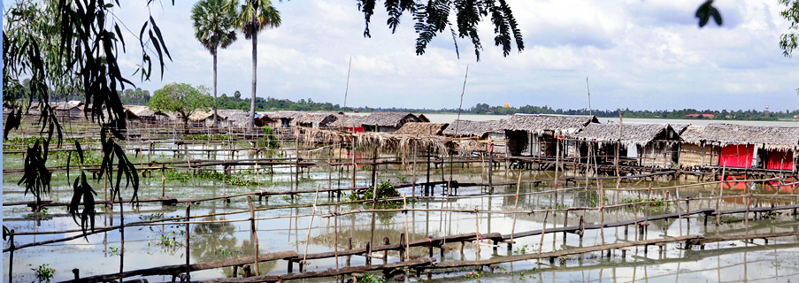
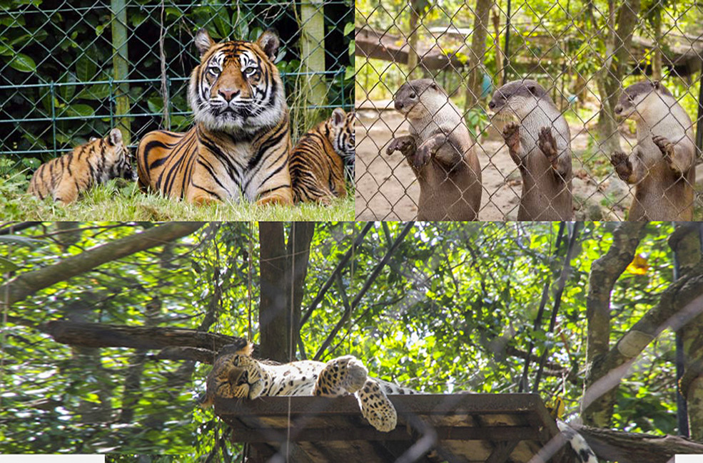
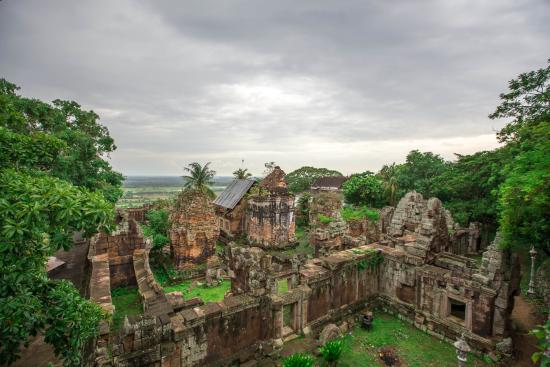
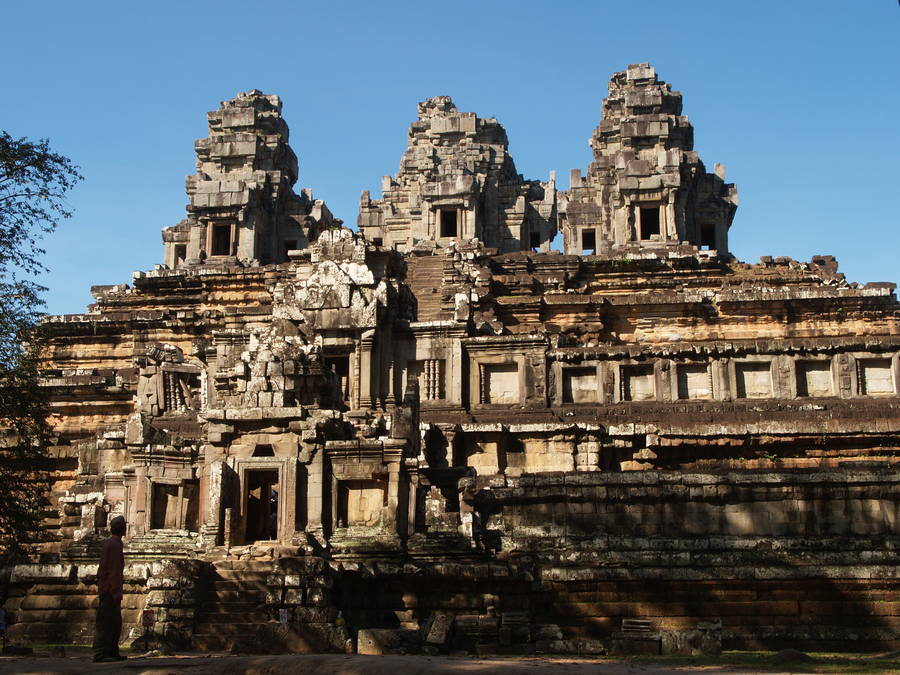

ខេត្តតាកែវ
តាកែវគឺជាខេត្តមួយនៃប្រទេសកម្ពុជា។ ទីរួមខេត្តរបស់ខេត្តនេះគឺក្រុងដូនកែវ។ តាំងនៅភាគនិរតីនៃកម្ពុជា តាកែវជាប់ខេត្តកំពតនៅខាងលិច កំពង់ស្ពឺនៅភាគពាយព្យ និង កណ្ដាលនៅភាគខាងជើង និង ខាងកើត។ ព្រំប្រទល់ខាងត្បូងរបស់ខេត្តនេះគឺជាព្រំដែនអន្តរជាតិជាមួយវៀតណាម។
ទីរួមខេត្តនាពេលថ្មីៗនេះ ដែលគេស្គាល់ថា ក្រុង ដូនកែវ ។ ធ្វើដំណើរពីភ្នំពេញទៅកាន់ទីរួមលើកំណាត់ផ្លូវជាតិលេខ៣គេនឹងបានឃើញស្ថានភាពប្រជាពលរដ្ឋ ការប្រកបរបររកស៊ីរបស់ពួកគេនៅក្នុងខេត្តនេះ។ មិនតែប៉ុណ្ណោះ គេក៏អាចធ្វើដំណើរតាមផ្លូវជាតិលេខ២ផងដែរ ដែលមានចម្ងាយផ្លូវប្រហែល៧៨
គីឡូម៉ែត្រ។ ធ្វើដំណើរពីភ្នំពេញទៅកាន់ទីរួមខេត្តតាកែវលើកំណាត់ផ្លូវជាតិលេខ ៣គេនឹងបានឃើញស្ថានភាពប្រជាពលរដ្ឋ ការប្រកបរបររកស៊ីរបស់ពួកគេនៅក្នុងខេត្តនេះ។ មិនតែប៉ុណ្ណោះ គេក៏អាចធ្វើដំណើរតាមផ្លូវជាតិលេខ២ផងដែរ ដែលមានចម្ងាយផ្លូវប្រហែល៧៨ គីឡូម៉ែត្រ។ សក្ដានុពលភាពសំខាន់ក្នុងខេត្ត
នេះគឺវិស័យទេសចរ ដែលជាប្រភពចំណូលជូនដ្ឋ និងអាចឱ្យប្រជាពលរដ្ឋទាញរកប្រយោជន៍ពីវិស័យនេះផងដែរ ។

ទន្លេបាទី
ទន្លេបាទីមានទីតាំងស្ថិតនៅក្នុងភូមិថ្នល់ទក្សិណ ឃុំក្រាំងធ្នុង ស្រុកបាទី ខេត្តតាកែវ។ ទន្លេបាទីមានចម្ងាយ៣៥.៥ គីឡូម៉ែត្រពីរាជធានីភ្នំពេញ រួចបត់ស្តាំចូលផ្លូវលំចម្ងាយប្រហែល២គីឡូម៉ែត្រ។ ទីនេះជាកន្លែងទេសចរមួយយ៉ាងសំខាន់ក្នុងខេត្តតាកែវ ហើយក៏ជាកន្លែងសក្ការបូជាមួយ
ផងដែរ ដែលមានប្រាសាទបុរាណ២គឺប្រាសាទតាព្រហ្ម ដែលសាងសង់ឡើងក្នុងរជ្ជកាលព្រះបាទជ័យវរ្ម័នទី៧ ដើម្បីឧទ្ទិសថ្វាយដល់ព្រះពុទ្ធសាសនាមហាយាន និងមួយទៀតគឺប្រាសាទយាយពៅ ដែលមានចម្ងាយ ១០០ម៉ែត្រពី ប្រាសាទតាព្រហ្ម កសាងឡើងក្នុងសតវត្សទី១២ ទំហំ៧ម៉ែត្រ×៧ម៉ែត្រ។

ភ្នំតាម៉ៅ
ភ្នំតាម៉ៅមានទីតាំងស្ថិតនៅភូមិត្រពាំងសាប ឃុំត្រពាំងសាប ស្រុកបាទី ខេត្តតាកែវ មានចំងាយ ៤០គ.ម តាមផ្លូវជាតិលេខ ២ពីរាជធានីភ្នំពេញ បត់ស្តាំ ៥គ.ម តាមផ្លូវលំ ដោយប្រើរយៈពេលធ្វើដំណើរតាមរថយន្តអស់ ៤៥នាទី។ ភ្នំនេះជារម្មណីយដ្ឋានចំរុះមានប្រាង្គប្រាសាទ ព្រៃភ្នំ
ធម្មជាតិ និងជាសួនសត្វដ៏ធំក្នុងប្រទេសកម្ពុជា។ តំបន់នេះមានផ្ទៃដី ១២០០ ហិចតា ដែលគេអោយឈ្មោះថា តំបន់ផ្ទៃដីការពារព្រៃឈើ។ ក្នុងចំនោមផ្ទៃដី ១២០០ហិចតានេះ ផ្ទៃដីចំនួន ១២០០ហិចតា ត្រូវបាននាយកដ្ឋានរុក្ខាប្រមាញ់ រៀបចំដាំដើមឈើ និងរៀបចំសួនសត្វ ដែលមានផ្ទៃដី ៧០ហិចតា។
ផ្ទៃដី ៧០ហិចតានេះ រួមមាន ភ្នំចំនួន៥ គឺ ភ្នំតាម៉ៅ ភ្នំថ្មដុះ ភ្នំផ្តៅពន្ធ ភ្នំឆយ និងភ្នំបាំង។ ក្នុងចំណោមភ្នំទាំង ៥ នេះមានភ្នំពីរ មានប្រាសាទបុរាណ គឺប្រាសាទតាម៉ៅ (ភ្នំតាំម៉ៅ) ប្រាសាទថ្មដុះ (ភ្នំថ្មដុះ) ។ភ្ញៀវជាតិនិងអន្តរជាតិដែលមកលេងឧទ្យានសួនសត្វ
និងមជ្ឈមណ្ឌលសង្គ្រោះសត្វព្រៃភ្នំតាម៉ៅ មិនដែលរំលងទស្សនាសត្វកម្រ ៦ ប្រភេទមានដូចជា ពោះថ្លាន់ ក្រពើ ខ្លា តោ ដំរី និង ខ្លាឃ្មុំ។ សត្វទាំងនេះមានប្រជាប្រិយភាពខ្លាំង និងស្ថិតនៅក្នុងបញ្ជីលើគេ ដែលទាក់ទាញភ្ញៀវទេសចរច្រើនបំផុតទស្សនា
ពេលមកកម្សាន្តនៅសួនឧទ្យានភ្នំតាម៉ៅ។ មូលហេតុដែលនាំឲ្យសត្វទាំងនោះ ក្លាយជាសត្វពេញនិយមជាងគេ ត្រូវបានលោក គុយ តុង អនុប្រធានគ្រប់គ្រងឧទ្យានសួនសត្វភ្នំ តាម៉ៅ និងមជ្ឈមណ្ឌលសង្គ្រោះសត្វព្រៃប្រាប់ថា ដោយសារសត្វទាំងនោះពពួកសត្វកម្រ
ហើយសត្វមួយចំនួនក៏មានភាពឈ្លាសវៃ អាចសំដែងសមត្ថភាពពិសេសសម្រាប់ភ្ញៀវទស្សនាផងដែរ។

ប្រាសាទតាព្រហ្ម
ក្រោយថៃ្ងរំដោះ៧ មករាឆ្នាំ១៩៧៩ រហូតមកប្រាសាទតាព្រហ្មនេះត្រូវបានរួចផុតពីក្រញាំនៃរបប ប៉ុលពតហើយក៏មានភាពស្រស់បំព្រងឡើងវិញ រួមទាំងមានភ្ញៀវជាតិ និងអន្តរជាតិ មកទស្សនាដើម្បីស្រាវជ្រាវថ្ម និងវត្ថុបុរាណដែលប្រាសាទនេះកើតតាំងពី សតវត្សទី១៣ គឺក្រោយប្រាសាទអង្គរវត្ត
ខេត្តសៀមរាប។S ឈ្មោះដើមរបស់ប្រាសាទតាព្រហ្មគឺ រាជវិហារ។ ប្រាសាទតាព្រហ្មមានទីតាំងនៅតាមផ្លូវវង់តូចទៅតាមទារជ័យគឺ បន្ទាប់ពីប្រាសាទតាកែវ ប្រហែល១គ.ម ហើយមានកំពែងបន្ទាយក្តីផ្នែកពាយ័ព្យ។ ប្រាសាទនេះកសាងឡើយនៅក្នុងឆ្នាំ១១៨៦នៃគ្រឹស្តរាជ ដោយព្រះបាទជ័យវរ្ម័នទី៧ ដើម្បីឧទ្ទិសថ្វាយព្រះមាតារបស់ព្រះអង្គក្រោមរូបភាពប្រាជ្ញាបារមី។
ប្រាសាទនេះរុំព័ទ្ធទៅដោយឈើធំៗដុះលើប្រាសាទ។
តាមសិលាចារិកនៅប្រាសាទនេះបញ្ជាក់ប្រាប់ពីទំហំ និងមុខងាររបស់ប្រាសាទ។ តាព្រហ្មមាន ៣១៤០ភូមិ និងមានមនុស្ស ៧៩៣៦៥នាក់ មើលថែប្រាសាទរួមមានរាជគ្រូ ១៨នាក់ មន្រ្តី២៧៤០នាក់ ជំនួយការ២២០២នាក់ និងអ្នករាំរបាំ ៦១៥នាក់។
ក្នុងចំនោមទ្រព្យសម្បត្តិរបស់ប្រាសាទនេះមាន ចានមាស ដែលមានទំងន់ជាង៥០០គីឡូក្រាម មានពេជ្រ៣៥៣៥ គុជខ្យង៤០៦២០ ត្បូងមានតំលៃ៤៥៤០ ស្បៃពីប្រទេសចិន៨៧៦ សូត្រ៥១២ និងក្លស់៥២៣។ ប្រាសាទតាព្រហ្មកសាងឡើងពីថ្មភក់ និងថ្មបាយក្រៀមមានកំពែង ៥ជាន់ និង មានប្រាង្គប្រាសាទចំនួន៣៩។
កំពែងខាងក្រៅរបស់ប្រាសាទនេះមានប្រវែង ៧០០ Χ ១០០០ ម៉ែត្រ។ នៅខាងជើងគោបុរៈខាងកើតនៃកំពែងខាងក្រៅ មានអាគាររបាំមួយ។ ប្រាសាទនេះក៏ត្រូវបានចាត់ទុកផងដែរ ជាសាកលវិទ្យាល័យផ្នែកវិទ្យាសាស្ត្រដែលក្រោមការគ្រប់គ្រងរបស់ក្សត្រីឥន្ទ្រទេវី។

ប្រាសាទយាយពៅ
ប្រាសាទយាយពៅ កសាងក្នុងទឹកដីចាស់សម័យបុរេអង្គរ ធ្វើអំពីថ្មភក់នៅចុងស.វ ទី១២ ដើមស.វទី១៣ ក្នុងរជ្ជកាលព្រះបាទជ័យវរ្ម័នទី៧ ដោយជ្រុងនីមួយៗមានប្រវែង ៧ម៉ែត្រប្រាសាទនេះបែរមុខទៅទិសខាងកើត ដោយមានអន្តរសាលមួយលយទៅខាងមុខ ហើយស្ថិតលើខឿនមួយមានកម្ពស់ប្រហែល១ម៉ែត្រ។
តាមអ្នកស្រាវជ្រោវជំនាន់មុនបានឲ្យដឹងថា ប្រាសាទយាយពៅមានខឿនប្រាសាទព័ទ្ធជុំវិញដោយបង្កាន់ដៃនាគ តែសព្វថ្ងៃនេះបានបាក់ធ្លាក់កប់ទៅក្នុងដីអស់ទៅហើយ។ ចំពោះផ្នែកខាងលើនៃប្រាសាទបានរលុះរលំធ្លាក់ចុះក្រោមហើយបើគេពិនិត្យឲ្យបានច្បាស់លាស់ គេសន្មតបានថា ប្រាសាទនេះពីដើមមានកម្ពស់ប្រមាណជិត១៥ម៉ែត្រ
តែសព្វថ្ងៃនៅសល់តែ៨ម៉ែត្រប៉ុណ្ណោះ។ បរិវេណនៃប្រាង្គប្រាសាទជាសិលាចារឹក នាចុងស.វទី៦ ដើម ស.វទី៧ ជាដើមដែលគេមិនត្រូវមើលរំលង នៅក្បែរប្រាសាទ គេឃើញមានគំនរថ្មចម្លាក់ដូចជាដងខ្លួនបង្កាន់ដៃនាគ និងសមាសធាតុតុបតែងប្រាសាទខាងលើនេះ។ បើតាមលក្ខណៈនៃក្បាច់ចម្លាក់ទាំងអស់នេះគេសន្មតបានថា
ប្រាសាទនេះស្ថិតក្នុងរចនាបថបាពួន។ បូជនីយដ្ឋាននេះកសាងឡើងដើម្បីឧទ្ទិសចំពោះលទ្ធិពុទ្ធសាសនា និង ព្រហ្មញ្ញសាសនា។ ម្ល៉ោះហើយបានជានៅផ្នែកខាងត្បូង និងខាងជើង គេឃើញមានឆ្លាក់ក្បាច់រឿងបែបព្រាហ្មណ៍និយមនៅលើក្បាច់ហោជាង។ ពោលគឺ គេឃើញមានចម្លាក់ព្រះសិវៈ ឬឥសូរដៃបួនកំពុងរាំ។
នៅចុងជើងស្តាំ និងឆ្វេងរបស់ទ្រង់មានចម្លាក់ទេពប្រណំម្យដែលលុតជង្គង់ ដៃស្ថិតក្នុងឥរិយាបទសំពះ ឬទេពប្រណម្យ។រីឯលើក្បាច់ផ្តែរវិញ គេឃើញមានចម្លាក់តំណាងទេពប្រណម្យ ឆ្លាក់ជា ៣ជួរ ហើយក្នុងមួយៗជួរមានទេពប្រណម្យចំនួន៩ លើកលែងតែនៅលើជួរទី១ មានទេពប្រណម្យតែ៨ អង្គុយអមសងខាងព្រះពុទ្ធអង្គ។